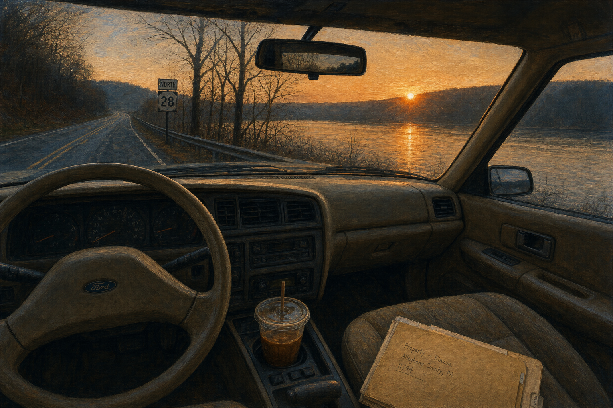
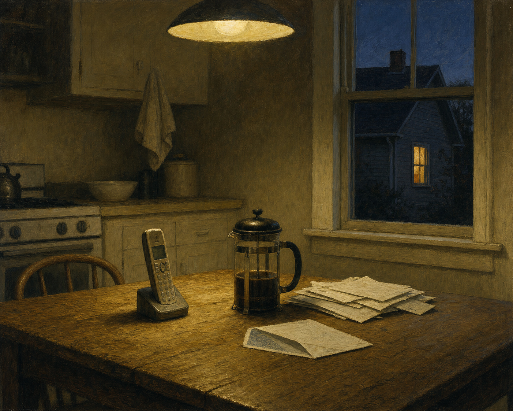
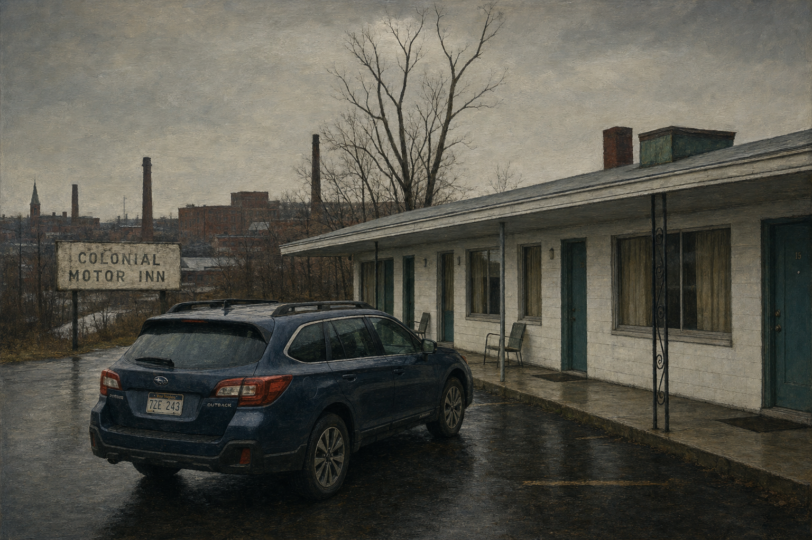
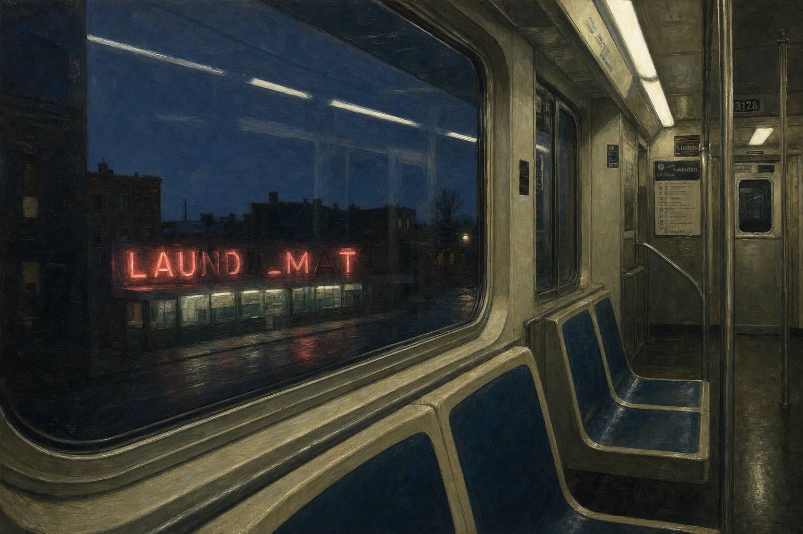

In BothHands
A quiet urban fantasy set in the Ohio River Valley in the autumn of 2025. A long-term-care insurance adjuster in Pittsburgh, a woman in Chicago who does not yet know what she is, and a friend whose death drew a line between them. The magic is small. The cost is not.
Read the chaptersThe chapters, as they come.
Working drafts. Posted here for friends as I write. Click a chapter to read it. Nothing here is final.
-

Chapter OneThe Doherty Kitchen
The coffee was cold by Sharpsburg.
I had stopped pouring it before I noticed, and the cup sat in the holder full enough that a turn brought a little over the rim. I let it. I would clean the seat tonight.
Route 28 was empty in the way it was on Wednesdays. The sun came late over the ridge across the river, low and orange. I had driven the road for thirty years and never noticed driving it.
The file on the passenger seat was eight months thick. Michael Doherty, Tarentum. Pancreatic, stage IV at diagnosis. Accelerated benefits claim, filed two weeks ago, the policyholder's signature shaky but his. His mother had power of attorney. She was the one I would be sitting with.
I had read the file twice on Tuesday. I had read it once more before I left the house this morning. There were things in the file you read once. There were things in the file you read three times because reading it three times was a way of being ready for the kitchen.
I drove.
The Doherty house was on Lock Street, two blocks back from the river, a brick rowhouse in the middle of a brick row. The block had been the same block since 1922. The cars on the street were the cars of an aging block. I parked behind a Buick with a handicap tag on the mirror.
She came to the door before I had finished pressing the bell.
"Come in."
"Mrs. Doherty."
"Come in. He's resting. You won't see him."
"That's fine."
She was in her seventies, small, in a cardigan and trousers and slippers because slippers were what you wore in the house when you had not been farther than the house in a long time. Her hair was cut short and she had cut it herself. Her eyes were tired in the specific way the eyes of long-term caregivers are tired. The hall smelled of disinfectant and laundry detergent and, faintly, of something medical.
The dining room door was closed. I did not need to ask why.
The kitchen was in the back of the house. The table was a round oak table with four chairs. On it: a stack of mail, a manila folder, a binder, three pill bottles, an open envelope of forms, a coffee cup with a tea bag in it. The chairs were pushed in. The chairs had not been pushed out in a while. The fixture above the table had two bulbs in it and one of them was out. We sat in the half-light.
"I made tea," she said. "I can make coffee."
"Tea is fine."
"I have coffee."
"Tea is fine, ma'am."
She poured. She sat down across from me. She did not fold her hands. Her hands went to the binder and opened it.
She had the records ready. The oncologist's letter. The diagnosis. The latest imaging report. The prognosis letter, which the oncologist had written three weeks ago in the careful neutral language of a man writing for an insurance company on behalf of a patient who had been his patient for eight months. *Life expectancy of less than six months.* I read the letter. I read the imaging report. I read the diagnosis. I made notes.
My chest was heavy. It was the kind of heavy that came sometimes when I sat with paper. I had read a thousand letters like this. The weight did not get smaller across a career. It got the shape it had.
She watched me read.
"You'll send it in today."
"Yes ma'am."
"How long."
"Two weeks. Sometimes faster. I'll push it."
"Thank you."
I took out the forms. I had her sign three of them—the certification of identity, the acknowledgment of receipt, the disclosure of beneficiary. She had a POA on file. She signed for Michael on a fourth. She wrote her son's name in her own hand and signed her own name underneath it. Her handwriting was careful. The careful was a thing she was doing on purpose, because her handwriting had not been careful for weeks. The careful was costing her something. I watched her finish the signature and lift the pen.
"That's all of them."
"Good."
I did not close the pad. There was a moment in which I could have closed the pad and stood up and thanked her and gone. There always was. I had learned in the second year to pause inside that moment. The pause was not a technique. The pause was a way of being in the room.
The room had been in the half-light the whole time. The bulb above us had been out the whole time. The wall clock ticked. From the closed door of the dining room there was nothing.
"Mrs. Doherty."
"Yes."
"Have you been sleeping."
She looked at me. She had been about to stand. She did not stand. She sat back down.
"No."
"Since when."
"June."
It was November. I knew it was November.
"Who comes to help."
"My daughter. Tuesdays and every other Saturday. His wife. Wednesdays in the afternoon when she's off, sometimes longer. Hospice nurse three times a week."
"And the nights."
"The nights are me."
I nodded. The pressure between my eyebrows had been there since I had read the prognosis letter and had not let up. It got a little heavier now. I had a way of breathing that I had developed for it and I used the way of breathing.
"Mrs. Doherty. Is anyone asking how you are."
She looked at me. She had been sitting upright in the careful way. Something in her shoulders moved. It was a very small movement. It was the movement of a woman who had been told for eight months that she was amazing and that she was so strong and that she was such a good mother, and who had needed in those eight months a different question, and who had not been asked the different question.
"No."
"How are you."
She held my eye for a moment. Then she looked down at her hands. Her hands were on the binder. She had small knobby fingers and the wedding ring she had worn for fifty-some years.
"I'm tired."
The pressure between my eyebrows sharpened the way it did when the light over the table was wrong.
She said it without looking up. She said it the way you say a thing you have not said and that you have been carrying because the not-saying was the carrying. She said it once. She did not say it again.
The weight in my chest changed shape. It moved from the front of my sternum to somewhere lower and broader, and it sat there. I put my hand against my own chest without thinking. I took it down again. I sat with her. I did not say *that's normal* and I did not say *anyone would feel that way* and I did not say any of the things people had been saying to her for eight months that had not helped her. I sat with her. The pressure in my brow was specific now. The weight in my chest had settled into the shape of something I had been carrying my whole adult life and that I did not have a name for.
After a while she breathed out. The breath was quiet. The breath had the smallness of a thing that had been ready to come for a long time and that was, finally, in a room that would let it.
"Thank you," she said.
"Yes ma'am."
She put her hands flat on the binder.
"Is there anything else."
"No ma'am. I have what I need."
"All right."
I closed the pad. I stood up. She walked me to the door. She stopped at the door with her hand on the latch.
"You're not going to write that down. What I said."
"No ma'am. I'm not."
"All right."
She opened the door. I went down the steps to the street. The Buick with the handicap tag was still there.
I sat in the car for a long time before I started it. My chest was heavy. The pressure across my brow had not gone away. I had thought about driving straight back to Pittsburgh and I sat with the thought and the thought did not hold. Somewhere around the second minute of sitting in the car I decided I would stop by my father on the way.
I started the car. I drove north.
It was a backtrack to take 28 the other direction from Tarentum, and I took it. The river was on my left now. The sun was overhead. I drove past the turnoff for the slope-street and did not take it. The radio was off and I did not turn it on.
The accent came back somewhere on the New Kensington bridge. When I stepped into the dayroom I heard it in my own mouth before I could stop it. "Hey, Pop. Yinz got the birds again today."
He turned his head. He looked at me for a moment that was longer than the moment of a man who immediately recognized his son and shorter than the moment of a man who didn't. He smiled. The smile was the smile he gave to people in the hall, the smile he gave to the aides, the smile of a polite man.
"Hello."
"It's me."
"I know it is."
He didn't. He was telling me he didn't.
I pulled the other chair around so I was sitting next to him, both of us looking at the courtyard. I had learned in the second year that side-by-side was easier than across-from. The across-from configuration asked his face to do a thing his face was not always able to do. Side-by-side asked only that we both watch the birds.
We watched the birds.
"There's a cardinal," he said after a while.
"I see him."
"He comes most days."
"Does he."
"Pop's wife liked cardinals."
He said it like that. *Pop's wife.* He was telling me about his mother. He was telling me what his father had said to him, sixty years ago, about the woman who had been Pop's wife and not yet my grandmother. I did not correct him. I had learned in the first year not to correct him. The story was the story he had today and the story was a story he had told me before, when he had told it as his own.
"She liked them too," I said. "Mom."
He looked at me. There was a moment in which he was looking at me and not at the past.
"Yes," he said. "She did."
He took my hand. His hand was light. The lightness of it was a thing that had happened across three years and that did not stop being a new thing each visit. I held his hand and we watched the birds and the cardinal came back to the feeder and the cardinal went away again.
The weight in my chest moved again. The pressure in my brow held steady. I sat with my father and I held his hand and I was, in a way I would not have been able to say, in the same room I had been in that morning. The room had different walls and a different chair and a different light. The work that was happening in it was somehow the same work.
We sat for a long time. I do not know how long. I had learned to stop checking my watch in the dayroom because the watch did not help. Time in the dayroom was the time the dayroom kept. He talked some and was quiet some. He told me a story about a man named Frank who had worked at the plant with him, which was a story I had heard, and he told me a story about Helen's garden, which was a story I had not heard. The garden story might or might not have been real. I would write it down later in the car. I had been writing down the stories that might or might not be real for two years now. Helen sometimes confirmed them and sometimes did not, and when she did not we both held the not-knowing with as much grace as we could.
When the aide came in with the cart I knew it was four o'clock.
"I'm gonna head, Pop."
"All right."
"I'll come up again in a few weeks."
"You don't have to."
"I want to."
He looked at me. He looked at me the way he had not looked at me when I came in. He nodded.
"Drive safe, son."
"I will."
I stood. I bent down and kissed the top of his head. His hair was thin. He did not say anything else. When I left the dayroom I did not look back, because I had learned in the first year not to look back, because the looking-back is for the person leaving and not for the person being left, and my father did not need to watch me look at him from the doorway.
The nurse said goodbye. I signed out. I went to the car.
I sat for a moment before I started it. I was tired in a way I had been tired before. The tiredness was a familiar weight. I had attributed it to the drive. Today I would do the same. I started the car and I drove home.
Pittsburgh in late afternoon in November is a city that gives up the light gradually. There was still some of it when I came down off the Highland Park bridge and there was less of it by the time I turned onto my own street and there was none of it by the time I had parked the car and walked up the steps to my own door.
Olive was at the door. She was at the door the way she was at the door—small, slow, the cat she had become this year. She had been a four-pound cat for two years now. She had once been an eight-pound cat. The vet had said the eight pounds would not come back and that the four would slowly become three and that we should think about quality. We had thought about quality. The thinking had become the way the year worked.
I picked her up. She had no resistance to being picked up. She had no resistance to most things now. She put her head against my shoulder and made the small sound she made and I carried her into the kitchen and put her on the counter.
I had a cup of coffee. I had it slowly. I changed her water and watched her drink. I gave her a small piece of chicken from the refrigerator, which she ate. I sat down on the floor next to the counter and she came to the edge of the counter and looked at me. I put my hands up and she walked into them. I held her against my chest and we sat on the kitchen floor for a while.
When I had finished the coffee I carried her out to the porch.
The porch faced the slope. The slope was in shadow already. The neighbor's kitchen across the street had a window lit. He was at the sink. I could see his shoulders moving. He had been washing dishes at six o'clock for as long as I had lived on the street.
The cat was in my lap. The mug was in my hand. The shadow was around me. The neighbor's window was the only lit window I could see and it was lit the way I liked windows lit—small, warm, far enough away that it was a window in a painting.
I had never really understood why most people fear the shadow.
I had thought, when I was a child, that I would grow out of it—the thinking that the shadow was a good place. I had not grown out of it. I had grown further into it. I had built my house around it.
The shadow is where lovers meet. The shadow is where children sleep without knowing they are safe and where families sleep without knowing they are sleeping. The shadow is the back booth and the porch and the lamp turned down and the corner of the room where no one is looking. The shadow is what a house does to itself in the evening when no one has come home yet. The shadow is the kitchen at eleven on a Tuesday with the lights off and one window across the way still lit.
The light is where the paperwork happens. The light is the prognosis letter and the bulb above the table and the form to be signed. The light is the dayroom at four o'clock when the cart comes in. The light is the chair in which Robert Kowalski had been sleeping for two months because the bed hurt his back, and the doctor's appointment he did not make. The light is the hospital corridor and the daughter sitting too straight in the chair next to the bed. The light is the bar at last call when a fight breaks. The light is every place a thing has to be witnessed.
Witness is sometimes the cost of being in the light. The shadow does not ask for witness. The shadow lets you be the small thing you actually are and goes on being the shadow.
The cat shifted in my lap. She was breathing the small breath she breathed now. I put my hand on her side. The mug was still warm. The neighbor's window went out at seven, the way it did. I sat in the shadow.
Shadows equal safety to me.
-

Chapter TwoBeth Reilly's Call
Friday came in cold and was over by six.
I had worked from home. The Doherty file had gone in Wednesday night and the acknowledgment had come back Thursday afternoon and the rest of the week had been three smaller files and a back-and-forth with the office about a denial they wanted me to soften the language on. I had softened it. I had sent the final at four-twenty, closed the laptop, and stood in the kitchen for a while looking at the calendar on the refrigerator door without reading it.
Olive was on the counter. She did not have the energy to ask for chicken anymore; she sat near the refrigerator door and waited for me to remember. I remembered. I gave her a small piece from the dish in the second drawer. She ate half of it and lay down on the dish towel I had folded for her in her corner the year she had started not wanting to be on the floor.
I put the kettle on. I had not had a mug since the morning.
The phone rang.
It was the cordless on the counter. I kept the landline because Helen called it on Sunday afternoons and because two or three of the older clients still preferred it. The display showed a Minnesota area code. I did not know anyone in Minnesota.
"Hello."
"Is this Eugene Butler."
"Yes."
"My name is Beth Reilly. I'm calling from St. Louis Park." She stopped. She started again. "I was a friend of Maggie's. Margaret Hennessy."
I knew before she said the rest.
"Yes."
"She passed on the twenty-eighth of October. I'm sorry. I should have — I've been trying to reach you. I had two old numbers in her book."
"Yes."
"The funeral was the Tuesday after. I would have called sooner. I didn't have a good number."
I sat down at the kitchen table with the cordless in my hand. The kettle clicked off behind me. I let it.
"It's all right," I said. "Thank you for calling."
She did not say anything for a moment.
"I didn't know if you would remember her."
"I remember her."
"I thought you would."
The pressure across my brow was settling. The weight in my chest had not yet moved. The conversation was happening at the speed of these conversations. I had been on the other end of these conversations many times across the years. I had not, in thirty years of work, been on this end of one.
"Can I ask."
"Yes."
"What happened."
"Cancer. She'd been sick since the spring. She didn't tell most of us until September. They thought they had time, and then it went fast."
"At home?"
"At home. Yes. A cousin was there. A nurse she'd worked with. And a friend who'd been helping her."
"I'm glad."
"I know she would have called you if she could have. She — she talked about you. Not often. But she did."
The weight in my chest moved. My hand went to my sternum without my asking it to and I left it there a moment and took it down again.
"Where," I said.
"What — I'm sorry?"
"Where was the service. I'm sorry. Where was — "
"Oh. St. Michael's in Wheeling. It was just family and close people. There weren't a lot of us. She didn't want a big thing."
"All right."
"I have an address if you want it. For the cemetery."
"Yes."
She gave me the address. Mount Calvary, on Mount Calvary Road in Wheeling. I wrote it on the back of an envelope from the stack on the table. I had reached for the envelope without looking. The envelope was the one the gas company sent. I would remember later that the address went on the back of the gas bill, in my own handwriting that I had not looked at while I wrote.
"Mrs. Reilly," I said.
"Beth."
"Beth. Thank you."
"You're welcome." She sounded like she was about to say something else. I had heard that pause many times. I had been the one making it many times. I waited.
"I'm sorry," she said. "I don't know why I'm finding this one so hard. I've been making these calls for a week."
"It's all right."
"Yours was a name I had to look up. Most of them I knew. Yours I had to try three times. And then you answered and — I'm sorry. I'm tired."
"Beth."
"Yes."
"You're doing a hard thing. You don't have to be sorry."
She breathed out. It was a small breath. It was the breath of a tired woman in a Minnesota kitchen on a Friday evening, talking to a stranger she had reached on her third try, and the breath had the smallness of a thing that had been ready to come for a while.
"All right," she said. "Thank you."
"Yes."
"If you go down. If you have any questions about — anything. The number I called from is mine."
"All right."
"All right."
We hung up. I sat with the phone on the table for a long time.
After a while I stood up. The kettle was still warm but not warm enough. I put it back on and waited for it. When it had come up again I poured the water into the press over the grounds I had ground before any of this had happened, and I pushed the lid down loose and waited, and when it was done I poured a mug and held it.
The mug was hot in both hands.
I had been twenty-six. April of 1995. The Foodland on Hancock Avenue, on a Saturday afternoon, after I had stopped on the way to Helen's to pick up the thing she had asked me to pick up. The friend had been on the cereal aisle. She had been thirty-six. She had said *Gene* and I had said her name and we had talked for five minutes. About my father. About her hospital. About the weather in Wheeling, which was the weather in Pittsburgh an hour delayed. She had said *we should get coffee.* I had said *yes, definitely, I'd like that.* We had both meant it. There had been a sale sign for Quaker Oats behind her and a fluorescent overhead with two bulbs slightly out of phase. I had registered both. I had gone back to Pittsburgh on Sunday. She had gone back to Wheeling on Sunday. Coffee could be the next month, or the one after, and then it could not be, because I had been at a new job and she had been on shift and there was no hurry for any of it.
I had been standing in the cereal aisle inside my head for thirty years.
I set it down.
I drank what was in the mug. I drank it slowly. Olive was no longer in the kitchen; she had gone to the bedroom, the way she sometimes did in the evening when the kitchen was done with her. I walked down the hall. She was on the throw at the foot of the bed, breathing the small breath. I sat on the edge of the mattress and put my hand on her side. She was warm. She did not open her eyes.
I sat there for a while. I did not turn on the lamp.
After a while I went back to the kitchen. The envelope with the address was on the table. *Mount Calvary Cemetery, Wheeling, West Virginia.* The writing was steady.
I picked up the cordless and held it and put it back in the cradle. I did not call Helen. Helen called me Sundays; this was not a thing to put into her Friday. I would tell her on Sunday. I would tell her in the slow way of telling her. I would not tell my father. There was no version of telling my father that landed anywhere.
I rinsed the mug at the sink and left it on the rack. I stood at the sink a moment. The neighbor's window across the street was lit. He was at his sink. He was washing dishes. He had been washing dishes at six o'clock for twenty-three years and he was washing dishes at six o'clock tonight. He raised his hand without looking up. I raised mine. He had not looked up; I did not know if he had felt me look at him, or if it was the hour he raised his hand and he raised it whether or not anyone was at the window across the way.
I thought about the drive.
I had Saturday morning open. I had no files until Monday. Wheeling was four hours on 70 if the traffic held and four and a half if it didn't. I could be there by noon. I could stand at the grave for whatever amount of time was the amount of time for standing at a grave thirty years late, and I could be back by dark.
I would go in the morning.
I stood at the sink a while longer. The neighbor's hands moved at his sink and the dishes went up onto the rack one at a time. The bulb above him was the bulb. The kitchen behind him had the lamp on in the corner that he kept on in the evenings. The room was lit and the room had been lit, the way a window in a painting is lit, for twenty-three years.
I turned my own lamp off and went down the hall and got into bed beside Olive without taking my clothes off, because the clothes were warm enough and Olive was already settled and I did not want to move her, and I lay there in the dark, and after a while I slept.
-

Chapter ThreeFour Saturdays
I had planned to leave at seven. The phone rang at six-fifteen.
The number was the office line. I let it ring. I had a cup of coffee in my hand and I had not had a cup of coffee while standing in the kitchen for a Saturday morning in a long time. I let it ring again. The second ring was almost over when I picked up.
The daughter on the other end was a woman I had spoken to once on a Wednesday in October. Her mother was a long-term-care policyholder of mine, Theresa Stanek, Latrobe. Stage IV ovarian cancer at diagnosis, accelerated benefits filed in late August, the file three months in and substantially clean. The mother had been in respite care since the second week of October. The daughter was calling because her mother was now at Excela Westmoreland and the hospital was telling her the policy did not cover the level of care they wanted to move her to, which I knew was a thing the hospital was telling her wrongly. She was crying through it. I told her I would look at the file and call her back in an hour.
I sat down at the kitchen table with the coffee in front of me and Olive at the corner of the counter and the trip bag by the door with my coat folded on top of it. I opened the laptop. The file came up. The daughter's call was not the first call about Theresa Stanek's level of care. There was a Friday note from the hospital in the inbox that I had not seen because the note had not arrived until late Friday and I had been on the porch by then and not looking at email.
I read the note. I drafted the response. I read the note again. The hospital was wrong, but it was wrong in the particular way that needed a phone call to fix and not an email. I called the discharge office. I waited for the discharge office to call me back. I made a second pot of coffee. The bag at the door stayed by the door.
The hospital called me back at nine. The conversation took twenty minutes. I called the daughter at nine-thirty. She thanked me twice. She had stopped crying. I sent her the form she needed to forward. I sent the hospital the form they needed to file. I closed the laptop.
It was ten-fifteen.
The bag was still by the door. The coat was still folded. I could have left at ten-fifteen and been in Wheeling by noon. I sat at the table for a few minutes and thought about it. The pressure across my brow had come on at six-thirty and not let up.
I picked up the phone and called Beth.
She answered on the third ring. I told her I had been delayed. I asked if next Saturday was all right. She said next Saturday was all right. She said she would tell Eileen. She said *thank you for calling.* Her voice had the same flatness it had had the previous Friday. The flatness was a thing I was getting to know about her voice.
I hung up. I made eggs. I ate them at the kitchen table with Olive on my lap. The bag stayed by the door.
I read the rest of the morning.
The second Saturday was the one Helen fell.
I knew it had happened before I saw the caller ID, in the way you know when the phone has the shape of bad news inside it. I had been making coffee. The number on the screen was Lower Burrell, the landline, not Helen's. It was the neighbor.
"Gene. It's Pat from next door. Helen had a fall."
"Where is she."
"Citizens. They took her in about an hour ago. She's all right. Her wrist is bad. They've been waiting for X-ray. I'm with her now."
"How bad."
"She didn't break the hip. The wrist is broken. They might pin it. They're not sure yet."
"How did she fall."
"She slipped. I don't know. She was at the counter. She doesn't remember the moment. She remembers being on the floor."
"I'm coming. Tell her I'm coming."
"All right."
I hung up. I put the coffee into a travel mug. I picked up the bag that had been by the door for eight days. I had not unpacked it. I left it where it had been packed for and threw a second smaller bag of clothes for Lower Burrell over my shoulder. I locked the door. Olive watched me go from the chair by the window.
The drive to Lower Burrell was familiar. I had driven it for forty years. I drove it without thinking. The sun was overhead by the time I got past Tarentum, and I thought about the Doherty kitchen as I passed the exit and did not take the exit. There was a place in the road, three miles past Tarentum, where the river opened out on the left and you could see the shape of the valley as a valley, and I noticed the valley and did not say anything to myself about noticing it. I had been driving past the place since I was sixteen.
Citizens General was a small hospital on a hill above the New Kensington bridge. I parked. I went in.
Helen was in a curtained bay in the ER, sitting up, her left arm in a black sling. Her hair was flat on one side and her mouth was set. Pat was in the plastic chair next to the bed and stood up when I came in.
"There he is."
"Pat. Thank you."
"I was just leaving. You're all right now."
"I'm all right."
She left. I sat in the chair she had vacated. Helen looked at me.
"You didn't have to come."
"Hush."
"I really am all right."
"I know."
She held her right hand out and I took it. Her hand was cold. The hospital was cold in the way hospitals are cold. The light over the bed was the kind of light Helen would not have chosen for a kitchen. I sat with her.
The doctor came in at three-thirty. The wrist was a distal radius, displaced. They were going to set it and pin it; the orthopedic surgeon would do it at four. She would stay overnight. I could pick her up Sunday morning if the discharge cleared. I said I would. The doctor went out. The curtain swung and settled.
"You'll go home," Helen said. "I'll be fine here. I'm fine."
"I'll go to the house. I'll get a few things for you. I'll come back."
"You don't have to."
"I want to."
"Gene."
"Yes."
"Edward will worry."
She did not say *don't tell him.* She said *Edward will worry.* I knew what she meant. I would not tell him this weekend. I would tell her son in Phoenix tonight by text. I would tell my father next time I drove up, if he was clear enough that day for the information to land in a way that would not just bewilder him.
"All right."
She closed her eyes. The hand stayed in mine. The hand was the part of her she did not have to consciously hold up. The wrist was the part of her that had stopped working. The other parts of her had not changed but had aged eight years in the last hour, which was a thing I had watched happen to people for thirty years and had not gotten used to.
The surgeon came at four. They wheeled Helen out. I went down to the cafeteria. I ate a thing that was a sandwich. I drank coffee that was burned. I sat at a small table by the window. The window faced the back of the parking lot and the field behind the hospital and the gray sky behind the field. The wall clock was twenty minutes fast. I knew this because I had eaten in this cafeteria when my father went in for his gallbladder in 2019 and the clock had been twenty minutes fast then.
When she came up to her room I sat with her again. They had put her in a room with no one else in the second bed. The IV was on her right arm. The cast was on the left. She was groggy. She knew I was there. She slept.
I went to the house at eight. I let myself in with the key I had carried in my wallet for twenty-six years. The house was the same house and it was also the house of a woman who had been at it that morning and had not finished. The cup with the tea bag was on the counter. The mail was on the kitchen table. The radio was off but the kitchen had the kind of quiet a house has when a person has not been in it for a few hours and the person was the radio. I put a few things in a bag for her. The bag was not heavy. I sat at the kitchen table for ten minutes and did not turn the light on.
I drove back to the hospital. I sat in the chair next to the bed.
She woke around ten. She looked at me. The look had the long-married look in it.
"You should have gone home."
"I'm staying."
"Gene."
"I'm staying."
She was quiet for a while. The window was dark. The hall outside the room had the low light of a hall at night with the carts pushed against the wall. A nurse came in to check the IV. She left.
Helen said, "Tell me what's going on with you."
It was the question she did not usually ask. She asked about my work and about Olive and about my father; she did not often ask the open question. The open question was what she was asking because she had time and the room was the room and her wrist was in a cast and the morning had aged her.
I sat with the question for a moment.
"Maggie Hennessy died."
She was quiet.
"From Vandergrift."
"I know who Maggie was."
"Yes."
"When."
"Three weeks ago. Beth called me last Friday. The funeral was already past."
She closed her eyes. She did not open them when she spoke.
"I'm sorry, Gene."
"Yes."
"I haven't seen her since your wedding."
"That sounds right."
"She came to the wedding."
"She did."
"Edward liked her."
"Yes."
"She wrote a letter to your mother once."
I did not know what to say to that. I had not known. I had a moment in which I thought I might ask and I sat with the moment and the moment passed.
"Did you know she was sick," Helen said.
"No. Beth said cancer. She had told Beth in September."
"Oh, Gene."
"It's all right."
"You haven't said it's all right."
"I haven't been saying anything."
"All right."
She opened her eyes and looked at me.
"You go down there."
"I will."
"You go down there and you do whatever you need to do."
"Yes."
"You hear me."
"I hear you."
She closed her eyes again. The hand in mine had gotten warmer at some point in the hour. The pressure in my brow had not changed. The chest was the chest. I sat in the chair and Helen slept and the room was the room and the hospital was the hospital and the night went on as nights go on.
The third Saturday was Joe Demko.
I had not seen Joe Demko in eight years. He had been an adjuster at the firm I worked at before this one, the firm I left in 2006, and he had stayed there and retired from it in 2017, and I had gone to his retirement lunch at Atria's in Mt. Lebanon and we had said *we should get together* in the way men of our age and profession say *we should get together* and I had thought of him perhaps twice in the seven years since. He died on a Wednesday. The obituary was in the *Trib* on Friday afternoon. Visitation Saturday morning at the funeral home on Library Road in Bethel Park.
I read the obituary at four on Friday. I sat in the kitchen with the laptop closed and the obituary up on my phone. The obituary said *Joseph A. Demko, 79.* It said *peacefully at home with family present.* It said his wife's name and his children's names and their towns. It said *in lieu of flowers.* I read the obituary twice.
I called Beth.
She answered. I told her something had come up and I would come the following weekend. She said the following weekend was fine. She said she had been meaning to tell me Eileen was no better. She said Eileen's husband had come down from Erie. She said *take care of yourself, Gene.* She did not say *you said last week.* I noticed the not-saying.
Saturday I drove to Bethel Park. The funeral home was the funeral home on Library Road. I had been there twice before, both times for clients. I had not been there for someone I had once gotten coffee with at six in the morning.
The room had a slow line and the line moved. I waited in it for fifteen minutes. Joe's wife was a woman named Donna whom I had met once at the retirement lunch and who recognized me from the eyes the way people do when their memory for faces is shorter than their memory for the shape of someone's eyes. She held my hand for a moment longer than she had held the hand of the man in front of me. I said the things you say. She said *thank you for coming.* She said *he liked you, you know.* I said I had not known. She said *he wouldn't have said.* She said something else, and I do not remember what she said.
I went out to the car. I sat in the car in the parking lot for ten minutes. The brow pressure was the brow pressure. The chest was the chest.
I drove home. The Subaru pulled slightly to the right somewhere on the Liberty Tunnel approach in a way it had not pulled the week before, and I made a note to take it in.
I made it home by two. I could have left for Wheeling at two and arrived by four. I knew this. I sat on the porch with Olive for a while and the afternoon went and the porch was the porch and I did not go.
The fourth Saturday I left at six.
It was still dark. The bag had been by the door for twenty-eight days. I had unpacked and repacked it once, in the middle of the third week, after I had realized I had packed for the wrong weather. I had added a pair of gloves. I had taken out the lighter shirt. The bag was, by this Saturday, a bag that had been thought about.
The Subaru had been to the mechanic on the Monday after Joe Demko. They had said it was the alignment. They had aligned it. The pull was gone. Olive was on the chair by the window when I left. I had fed her at five-thirty. I went down the slope and through Bloomfield and onto the parkway and the Subaru drove straight.
The parkway was empty at six. The sky was the sky of a November Saturday before sunrise, the kind of sky that has no weather in it yet and is waiting to decide. I had the coffee in the cup-holder and the news on low and the bag on the passenger seat where the Doherty file had been on the morning that was now in another month.
I-79 came out of the parkway and ran south toward Washington and West Virginia. I had driven this stretch maybe a dozen times in thirty years, for clients in the southern valleys. The road was familiar without being known. I drove. The light came up around Bridgeville. I passed Canonsburg. I passed Washington. The exit for I-70 west came up at the south end of Washington and I went past it.
I went past it.
I was three miles south of the exit when I noticed. The thing I noticed was a sign for Waynesburg. Waynesburg was south of where I was supposed to be. I checked the map on the phone. The phone reset the route. The map said go on to the next exit and turn around.
I drove to the next exit. The next exit was eleven miles further south than I-70 would have been. I got off. I got back on. I drove the eleven miles back north. I took I-70 west. The whole detour had cost me thirty-five minutes. I did not think about the thirty-five minutes. I drove.
I-70 west of Washington was a road I had not driven in twenty years. The shoulders had been widened and the medians had been paved and the trees had grown. There was a single lane closed for construction somewhere around the West Alexander exit. The single closed lane went on for nine miles. The traffic was a trail of trucks and weekend cars and one black hearse, three vehicles ahead of me, that pulled off at the West Alexander exit and was gone. I did not know if it had been on the way to a funeral or coming back from one. I followed the truck in front of me. The truck did fifty-two miles an hour. I followed the truck for nine miles.
I crossed into West Virginia somewhere I did not see the sign for. The road came off the high ground and started down toward the river. I had not been in West Virginia in thirty years. The trees were the trees of West Virginia and not the trees of Pennsylvania, which was a thing I had not known until I had not been in West Virginia for thirty years and was now back in it. The land was steeper. The houses on the hillsides were closer to the road.
I needed gas. The needle had been at a quarter when I left and had been at less than a quarter at Washington and was now at the line. I took the first exit with a station sign and pulled into a station with three pumps and a small lit building behind them.
The pump did not work.
I tried to put my card in. The reader said *please see attendant.* I tried again. The reader said *please see attendant.* I went inside. The attendant was a young man with a phone in his hand and a name tag that said TAYLOR. Taylor looked up.
"Pump's down. Has been since yesterday. Sorry."
"All three?"
"The three out front. The other side's open. Two and four."
I had not seen the other side. I went back out. I drove around. The other side had two pumps and one of them was the pump that worked. The pump that worked had a woman at it filling up a Cherokee. I waited. She finished. She drove off. I pulled forward. I filled the tank. I bought a coffee inside that I did not need. Taylor took my card. Taylor said *have a good one.*
I had spent twenty-two minutes at the station.
I got back on the interstate. I drove down toward the river. The exits for Wheeling came up. I took the exit for downtown.
Wheeling came at me through the windshield the way a city does when you have not seen it in thirty years and were not certain in the moment of leaving it that you would ever see it again. The bridge over the river. The brick streets. The hill at the back of the city where I knew the cemetery was. The buildings I knew without knowing I knew them — the Capitol Theatre, the cathedral, the old hotel near the bridge. The city was the city it had been. The city had also done the things cities do across thirty years, which is to lose some buildings and gain others and let some blocks go and pull some blocks back.
I had not booked a motel. I had thought I would drive in and find one. I had thought wrong, or I had thought correctly and had simply not done the thinking past the first move. I drove down a main street and then a parallel street and then a numbered street, and somewhere on the numbered street I saw a sign for a motel on a side road, and I turned onto the side road, and I parked in front of the motel.
The motel was a one-story brick L of twelve rooms set behind a small office at the corner of the lot. The sign said COLONIAL MOTOR INN in blue letters, two of which were unlit. The office had a vending machine outside it and a chair on the sidewalk next to the vending machine that no one was sitting in. The lot was half full. The lot was the lot of a motel that worked.
I did not get out of the car.
I sat with the engine off and the bag on the passenger seat and the empty coffee in the holder and the brow pressure that had been there since six. I had driven from Pittsburgh to Wheeling, ninety minutes the long way, in five hours. I had crossed a state line for the first time in thirty years to a city I had not chosen to come to until I had been told I had to. The motel was not the motel I would have chosen. I had not chosen the motel. The motel had been the motel I had turned onto the side road for.
I sat in the car.
After a while I got out.
-

Chapter FourAvondale to the Loop and Back
I have sunglasses on at eight-fifteen on a November Tuesday under a sky the color of a not-quite-clean window, and the woman on the bench at the California stop is looking at me like I am committing an offense against the dignity of weather, which is fair, but she has not had the year my eyes have.
I take my seat at the end of the second car. Aiden was not at the bakery this morning — Aiden is the boy with the curls who keeps forgetting to charge me for things and is currently the closest thing I have to a meaningful relationship with another human being in this city — and so I had to buy my long-with-the-seeds from a woman I did not know, who charged me, which felt like a small bureaucratic injustice but which I bore.
Two women in the row in front are arguing about whether one of them should get back together with someone named David. The one in the camel coat says David has finally listened. The one in the green hat says David's listening is a thing that has a half-life. The one in the camel coat thinks about this for a minute and says, "Yeah, but the half-life is still long enough to enjoy."
The train goes under at Western. The bars drop on my phone. I had been about to call my mother — the recents list has my mother three down from the top, and I am scrolling toward her when the train goes under, and the math about how long it has been since I called her is math I close before I finish doing it. The text from Maddie is still on my lock screen from yesterday: *do u think a person can love their job and also fully not care if it gets hit by an asteroid.* I will answer at lunch. I will say yes.
The Blue Line at Clark and Lake is a fluorescent room with people in it pretending they are not in the same fluorescent room together, and I cross the platform and go up the stairs because I like the stairs and I do not like the escalator on Tuesdays. My building has the revolving door I have an opinion about — the door turns a half-beat ahead of you, which is either generous or condescending depending on your mood, and Tuesday is a generous-door day. Twenty-four has the gray carpet and the gray walls and the windows that face north, which is my favorite kind of light to work in and which I would not have known I had a favorite kind of light to work in until I worked here. I plug in the laptop. I get the okay coffee from the third pot. The first three emails are from Houston, and I love Houston, but Houston needs to send fewer emails in the morning.
The nine-thirty is six of us in the small conference room and a screen at the head of the table with a routing diagram I made yesterday. My boss is Cara. Cara came up through operations and crossed into something that does not have a clean name on the org chart, and Cara wears the same chunky glasses she has worn for twelve years because she said in a town hall once that the glasses were the only fight she was willing to have with herself before nine a.m.
The room knows what the meeting is about before anyone says it. Sales wants IT to do something IT does not want to do. My job is to put the map up at the moment in the conversation where the map will do the most work.
The moment comes at minute eleven. I put the map up. The sales guy — Brendan, who is fine — leans forward. The IT guy — Marcus, who is also fine — frowns at the screen and then frowns less. I do not say anything for almost a minute. Then I say the thing that lets Marcus arrive at the conclusion he is already most of the way to, which is that the routing change is going to be a pain but not the kind of pain he was bracing for. Marcus nods. Brendan nods. Cara does not look at me but she does the small thing she does with her shoulders that I have learned means *good*.
In the hallway after, Cara says: "Tuesdays."
I say: "Tuesdays."
She walks the other way.
The kitchen has the bad coffee and the worse coffee and the okay coffee, and Aaron comes in while I am topping up from the okay coffee, and the law of office kitchens is that we have three seconds to acknowledge each other or it becomes a thing, and we hit each other at the second-and-a-halfth second, which is the upper bound of acceptable. He gets the worse coffee. He drinks the worse coffee black, which is one of the reasons we are not still sleeping together, though it is not at the top of the list. He nods at me on his way out. I notice that I am holding the mug a half-second longer than the moment is asking me to. I move my hand.
At my desk I answer Maddie. I send back a picture of a stapler with the message *the office has a stapler week.* She sends the laughing-crying. I am, again, the kind of person who has a job with staplers in it, but I have Maddie, so this is fine.
Lunch is the salad from the place on the corner where the woman behind the counter assembles things faster than I think is theoretically possible. I eat it at my desk while reading something on my phone that I will not remember reading. The afternoon is one call and a back-and-forth on Slack with the Houston manager about an invoice she has the wrong version of and that I send her in a way that lets her tell her boss she found it herself. At four I take the headache pills — two-p.m.-pills-plus-two-hours, my system for not letting the day slide sideways at its end. At five-oh-three I close the laptop.
Priya is in the elevator and I have not seen Priya since the all-hands, and we do the standard — *how are you* / *fine* / *Tuesday* / *yeah* — except Priya says *I keep meaning to ask if you ever found that café on Clybourn* and I say *yes I did* and she says *was it the one* and I say *yeah, the one with the chairs that look like your grandmother's chairs* and she laughs, and Priya has the kind of laugh that is louder than Priya is, and I have liked Priya since the first time I heard her laugh in a meeting in March. The doors open at the lobby and we say have a good night and both of us mean it.
The Brown Line going back is quieter than the Blue Line coming in, which is one of the small geographic injustices I have made peace with. I stand because there is a woman with a bag on the next seat who needs the seat for her bag and I do not feel like having that conversation. At California the wind off the river is a different wind at six-twenty than it was at eight-fifteen, and I like the six-twenty wind more. The neon at the laundromat is missing the same three letters it was missing in September. Through the window the woman at the folding table is folding, as she has been every Tuesday for the fourteen months I have been walking past this laundromat. I have come to feel that she is part of the structure of California Avenue and that if she stopped folding the avenue would notice.
I stop at the kebab place because I do not want to make dinner. Yusuf sees me come in and turns to the kitchen and calls back something in Turkish, and I have ordered the same thing for fourteen months in a row and the calling-back is the only part of the order I am responsible for, which is the kind of relationship I am happy to be in. I sit at the small table by the window. Yusuf brings me extra of the white sauce because Yusuf is the kind of man who notices that you finished the white sauce last time. I eat the food. I leave the right amount of money on the table. He says *take care.* I say *you too.*
The walk from the kebab place to my building is three blocks. The lamp by my front door has been replaced since last week, which means somebody has replaced it, which means I live in the kind of building in the kind of neighborhood where lamps get replaced. This is the kind of thing I noticed in Boulder and that I am still noticing here. Chicago is still the city after Boulder. It will be the city after Boulder until I decide it isn't.
In the apartment I put the keys in the bowl. I take off the coat. I go past the corkboard by the door — postcards, a card with a sailboat on it, a receipt for a doctor's appointment I forgot I had — and turn on the overhead, and three minutes later the lamp on the timer comes on, which is the small daily argument the lamp and I are having about which of us is in charge of light in this room.
The radio in the kitchen is at the news because I forgot to turn it off this morning. At some point between the second and third sentence of a story about a vote in committee the signal goes between things, and the room is briefly the not-quite-static the radio makes. I reach across the counter and nudge the dial. The news comes back.
I put the kettle on. I do not make tea.
I sit on the couch with my socks on. I take a picture of my own feet on the coffee table and send it to Maddie with no caption. Maddie sends back the heart. I close the phone. The radio in the next room is now telling a story about a road being closed for something, which is fine. The apartment has a Tuesday-night quiet. I sit in it.
-
Chapter Five
Two Stops Past
Saturday morning in Avondale is the radio low in the kitchen and the kettle and the bag of okay coffee I have been working on for three weeks, and I sit at the small table by the window with the New Yorker piece I started in October — three columns and a peace with not finishing, the way I do not finish New Yorker pieces.
Priya's text arrives at 12:40. *Sooo sorry, Olivia's daycare called, gotta grab her, do u hate me forever.* The text was sent at 11:58, which I see the way you see a clock with the wrong time and let go of, because by twelve-forty I am on the Blue Line at California with my hand on the rail and my coat unbuttoned, and the rail and the coat are doing their own kind of math that does not include the time-stamp on a text.
The coffee was at one in Wicker Park, a place Priya picked, with the chairs Priya described twice as *the actual problem with the whole place* in a way that meant she liked them. I am dressed. I am on the train. I will get off somewhere and get coffee and have a Saturday. I send back the dragon emoji and the heart, which is the dialect Priya and I have not yet established but which I am hoping will become our dialect, and I close the phone and look out the window at the dark, because the train has gone under at Western.
I get off at Chicago.
Damen had been the plan. I had said it to myself on the platform at California — *Damen, Damen, the third one* — and I had the platform muscle ready to step off, but the train pulled in and the doors opened and I was reading the poster on the inside of the car about ovarian cancer screening and I missed the step, and then Division was the next chance, and I was thinking about my own mother and what the screening schedule was for women her age and whether she had told me what the schedule was, and Division came and went, and at Chicago I stepped off, and the train pulled away, and I stood on the platform and registered the math of being two stops past where I meant to be, which was a math I had not done on purpose but was not unhappy about doing.
Up the stairs into the cold thin Saturday-afternoon sun. Chicago Avenue at Milwaukee is wider than the city has been for me in fourteen months, and I stand at the corner for a moment to let the size of the intersection do what it is going to do to my eyes, and then I turn left, because the wind is coming from the right and a person walks into the wind on a Saturday only if the person has a particular kind of constitution, which is not mine.
I have been in this part of the city twice. Once for a wedding on Augusta two summers ago, someone Maddie knew tangentially, where I was Maddie's plus-one without Maddie there — she had bailed at the last second and I had gone anyway because I had the dress. Once for a doctor my insurance directory sent me to, in a building I do not now remember, for a thing I do not now remember why I was being seen for. The neighborhood and I have a relationship of two-degrees-of-vague-recall, which is one degree more than nothing and one degree less than I-have-been-here.
I walk.
There is the smell of a bakery I do not pass, somewhere off the street I am on. There is a poster pasted onto the side of a closed bar — a band I have not heard of, a date in March, the photograph black-and-white. There is a third thing I do not see, and I turn down a side street I had not meant to turn down. A man across the street at the corner of Augusta and the next street is looking at me for the time it takes a person to register a stranger, and then he looks at me for a second longer than that. I move my eyes and keep walking and he does the same and I do not think about him again.
The bookstore is on the side street I have turned onto, in a building I would have walked past if the door had been closed. The door is propped with a brick. There is a hand-lettered sign that says OPEN and a chalkboard with the day's hours, the *h* of *hours* lower than the *o*. I go in.
The shop is one room and a back room. The front room has the reading chair by the window and the new books on a long table and the cash desk in the far corner with a man in his sixties behind it reading something thick. The back room has the used books on shelves and the floor of the back room is two steps down from the floor of the front room, which I do not see until I have nearly stepped down and caught myself. The light in the front room is the cold Saturday light off the front window. The light in the back room is one bare bulb in a paper shade.
Bea is in the reading chair.
She is in the chair the way she used to be in the chair in the cartography lab at Madison — her legs folded under her, her shoulders against the back, a book open on her lap she is not looking at. She has cut her hair since Madison. She is looking out the window. She does not see me come in.
I stand for a long time before I do anything. The man at the desk does not look up. The street outside makes its own small noises. A woman with a dog passes and the dog noses the brick that holds the door.
"Bea," I say.
She looks up. She does the thing a person does when their face has to catch up with a fact their face was not expecting. She says my name. She says *Hannah*, and she says it the way you say a name you have not said in a long time and that comes back unrusted. She gets up out of the chair and we hug, and she is thinner than she was in Madison, and I notice this without saying anything about it, and we hold on for a beat longer than two people who knew each other in cartography class generally hold on.
"I cannot believe this," she says.
"I cannot either."
"I live four blocks from here."
"I live in Avondale."
"I have been here for fourteen months."
"I have been here for fourteen months."
We stand and stare at each other.
"Sit down," she says.
I sit. She moves a stack of books off the other chair — there is another chair, against the wall by the radiator, that I had not seen — and pulls it across to the window, and we sit by the window in the cold Saturday light, and the man at the desk turns a page.
"How have you been," I say, which is the question I do not ordinarily ask because I do not ordinarily get the real answer, and she looks at her hands and she says, "My mother died six weeks ago."
I do not say anything for a while.
"I am so sorry," I say.
"I know. Yes. Thank you."
She tells me about it. She tells it in the order it came. Her mother had been sick since the spring of last year, on and off. The on-and-off had become on, in September. The hospice had been three weeks. She tells me what the hospice nurse's name was and what the hospice nurse's earrings looked like, and then she stops, and after a minute she starts again. Her father had not come. Her brother had come from Sacramento. The service had been small, in Indiana, in the town her mother had moved to after the divorce, which had never been Bea's town and was not now. The brother had flown back Sunday night. The hours after the brother had flown back had been the worst hours of her life.
She is talking with her hands. She is using the hand-talking I do not remember her doing in Madison, but which she clearly has been doing for a while.
She tells me she has been waking at four in the morning. Every day. She does not know what to do with the four hours before she has to be anywhere. She has been coming to this bookstore on Saturdays since the third Saturday because she does not want to be in her own apartment, where her mother had visited once, last April, for the weekend. She drinks a coffee at the place next door before they open. She sits in this chair from ten to one. She reads three pages of whatever she has picked up off the table. She goes home around two and she calls her father in Oregon, who answers but has nothing to say.
I do not say anything for a long time. I move my hand toward hers on the arm of the chair. She moves hers to meet mine.
I do not remember what I say, when I start saying things. I remember it is not the things I have been told are the things to say. I think I am telling her about my own mother, who is alive, who calls me every three weeks, who is in Minnesota, who has the strong feelings my mother has about the women in our family without ever telling me what they are. I think Bea is laughing at something I have said about my mother and then I am laughing too, and we are still holding the arms of the chairs, and the man at the desk has not looked up.
We sit for an hour. The cold light in the front window has moved by the time we stand up. Bea has hugged me again and we have exchanged numbers — actually exchanged them, with the names typed in correctly — and she has gone to use the bathroom, and I have wandered over to the front table and put my hand on a book.
The book is a novel I have heard of but not read, by a writer I have heard of but not read. I do not pick it up to look at the back. I take it to the man at the desk and he charges me cash and gives me a paper bag and I say thank you and he nods and I leave.
Bea is on the sidewalk waiting for me. We hug a third time.
"Don't disappear," she says.
"I will not disappear."
We mean it both.
The wind has shifted while we sat. It is at my back now. The neighborhood is the same neighborhood I walked through an hour and a half ago, but the light has gone a quarter-degree warmer at the edges, the way late November light goes warmer for the twenty minutes before it gives up, and I notice this without making more of it than that. My eyes do not hurt. The brow-pressure that has been a fact of every Saturday since I moved to Chicago is not present. I think about whether to take the pills and then I do not think about it.
On the train I read a text from my mother — *call me when you can* — and I write back *will tomorrow* and mean it. The recents list has her at the top now.
I get off at California. The folder-of-laundry woman is in her window. The kebab place has Yusuf at the counter and he sees me through the glass and raises his hand, and I raise mine, but I keep walking, because I have the book in the bag and I want to be home.
At my building the lamp by the door has not been replaced again. Same lamp from Tuesday. I let myself in. I put the keys in the bowl.
I put the book on the kitchen table. I do not open it.
The radio is still at the news. The kettle is where I left it. The lamp on the timer comes on at the time it is supposed to, which it sometimes does and sometimes does not. I put my hands on the counter and I stand for a while.
I get the phone and I find Bea in the recents and I put her in favorites. The word *favorites* is the wrong word for what I am doing, but it is the phone's word, and the phone's word is good enough.
I am buoyant. I do not know the word for it. The kitchen is quieter than it has been in a long time.
Chapters Six through Seventeen are drafting. Check back.